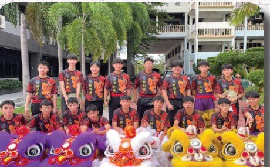
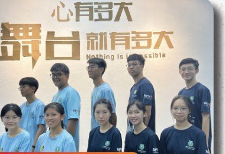
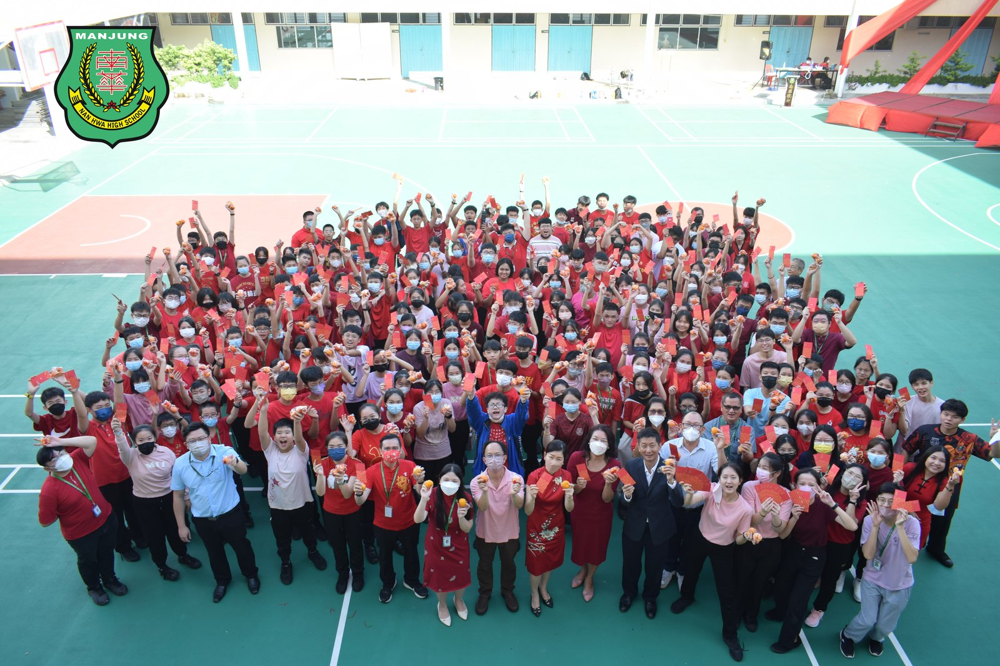
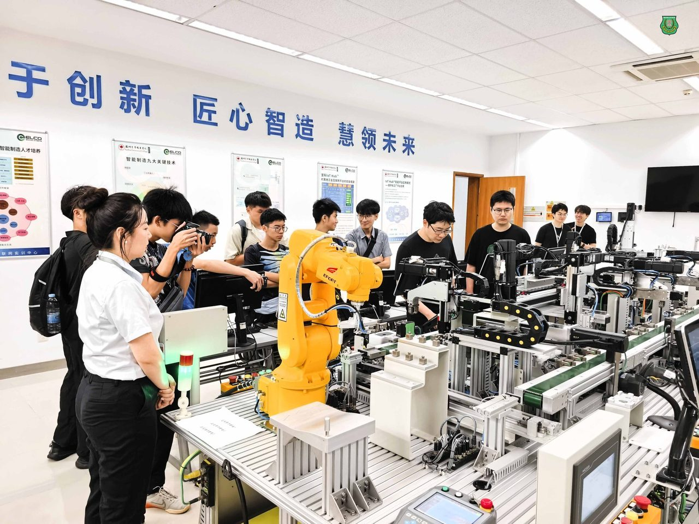
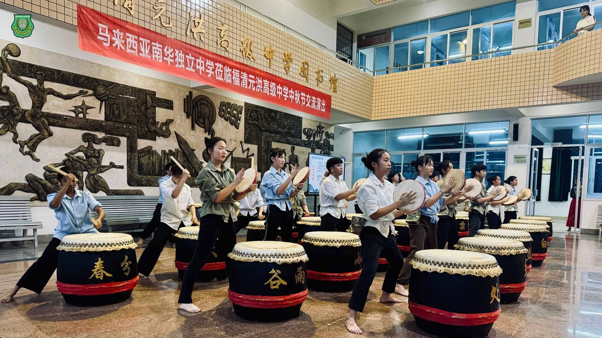
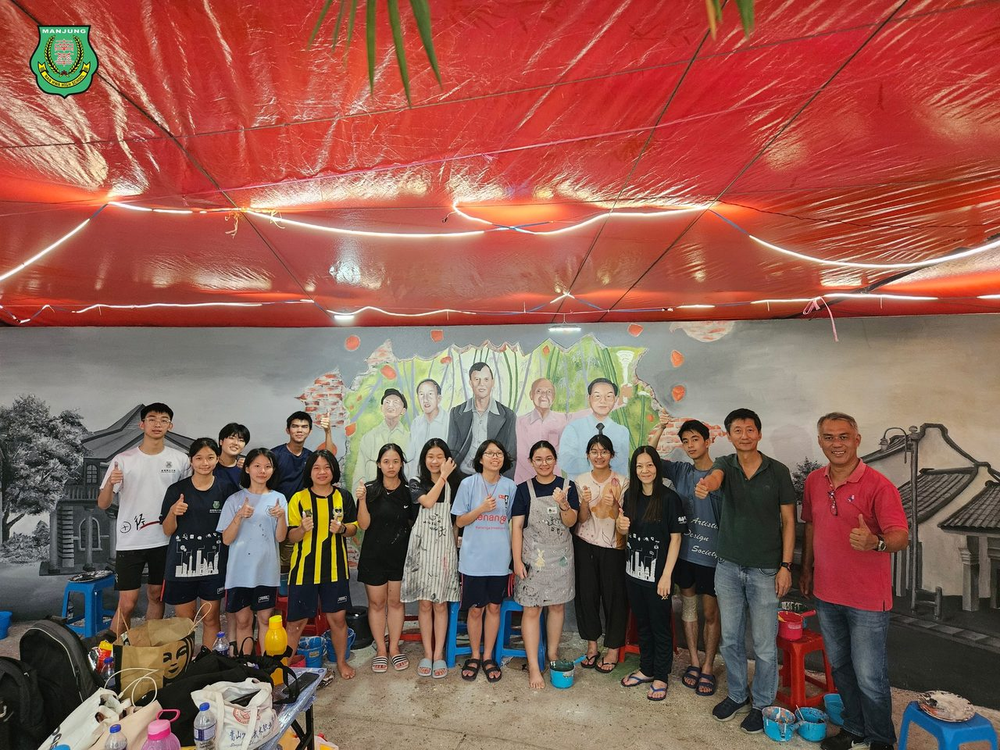

联课活动 · 校园生活与学生领袖
以文会友 · 以艺通心
十六个学会社团、一场跨语言跨民族的文艺大汇演，还有让学生学会承担的领袖岗位——南华独中相信，课室以外的学习，同样是教育的一部分。
联课活动 · 校园生活与学生领袖
十六个学会社团、一场跨语言跨民族的文艺大汇演，还有让学生学会承担的领袖岗位——南华独中相信，课室以外的学习，同样是教育的一部分。
Co-Curricular Clubs

从廿四节令鼓到射箭学会，从圣约翰救伤队到烹饪学会，南华独中的联课活动横跨体育、艺术、服务与技能四大方向，让每个学生都能找到自己愿意投入的舞台。
Arts & Culture Festival
南华独中注重国民素质的培养，举办跨语言、跨民族、跨文化的文艺大汇演，向孩子灌溉心坎的艺术种子，向社区民众催生鉴赏的嫩芽，在曼绒县乃至全国各地长出参天的文艺大树。
Student Leadership

南华独中透过联课活动的岗位历练，培养学生领袖的大局观与才德兼备的素养——从班级到社团，从社团到全校性活动，学生在承担中学会领导，也学会谦卑。
School Culture

作为「迎领 21 世纪中华文化素养领袖人才」这一愿景的关键，南华独中多年来致力于为学生提供优质的教育环境，在以学生为中心的校园文化中，将学生培养为兼具本土情怀与国际视野的世界公民。
Beyond Campus
学习不止于校园。南华学生的足迹，从曼绒的社区延伸到海外的高校与侨乡。

研学团远赴中国苏州，参访苏州科技大学、苏州百年职业学院与西交利物浦大学：ABB 机械手臂实操、智能制造课程、剪纸动画制作，再走进苏州园林，一趟旅程兼顾科技与文化，也让建教合作从纸上走到眼前。

中秋佳节，廿四节令鼓队远赴中国福建福清，与福清元洪高级中学开展教育与艺术交流，走访侨乡博物馆、乡贤文化馆，在中秋晚会演出《Mari-mari Sitiawan》——这段跨越山海的演出，登上了中国央视的报道。

2023 年华教节，南华独中受林连玉基金之邀，成为公祭墓园文化墙壁画的绘制学校。近二十位学生在美术老师带领下披星戴月、风雨无阻地分批作画，以画笔纪念族魂林连玉与华教先贤。